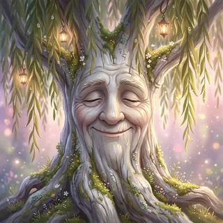
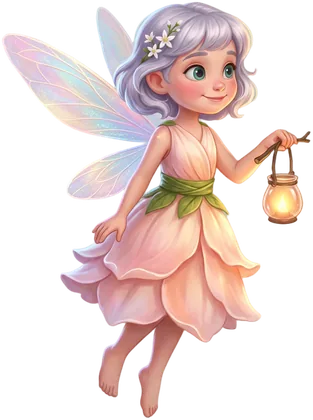
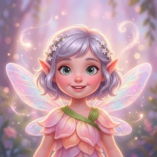
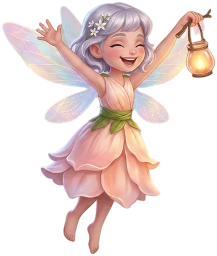

Grandmother Willow


a fairy sorting puzzle
Every bloom wakes the creature whose heart-light filled it.
Tap a blossom to lift its top wisps, then tap another to tip them in. You can also drag from one to the other.
Wisps only land on their own colour or in an empty blossom, and every wisp of one colour on top travels together.
Fill a blossom with four of one colour and it blooms: a creature wakes and sits on top. Bloom every colour to finish the level.
Mist (Mushroom Hollow): hidden wisps show when the ones above them move away.
Brambles (Moonpond): a wrapped blossom opens after the number of blooms on its badge.
Acorn cups (Crystal Grotto): hold two wisps, never bloom.
Undo is free (a bloom can't be undone), the Firefly shows a good pour (three per level), and a Sprout grows one extra empty blossom (once a level; it caps you at two stars).
Finish in as few pours as Grandmother Willow did for three stars.
| Tap / click | Lift, then pour |
| ← → ↑ ↓ + Space | Pick a blossom, lift, pour |
| 1–9, 0 | Pick blossom 1–10 |
| Z / U / Backspace | Undo |
| H · G · R | Firefly · Sprout · Restart |
| P / Esc | Pause |
| Gamepad | D-pad, A lift/pour, B undo, X firefly, Y sprout, Start |
Art, music, sound and voices: generated with ElevenLabs (Nano Banana 2.1, Eleven Music, Sound Effects, Eleven v4: Libby as Lumi, Nan as Grandmother Willow). Code: vanilla JavaScript and Canvas 2D.


Every wisp is home and every creature is awake. Thank you for helping Lumi.